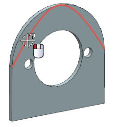

Create a Swept feature from the conic curve
-
From the Surface toolbar, click Swept
 .
.
-
Select the conic curve as shown.

-
In the Swept dialog box, in the Guides group, click Select Curve.
-
In the graphics window, select the horizontal edge as shown.

With all necessary parameters defined, a preview of the Swept feature appears.

-
Click OK to create the Swept feature.